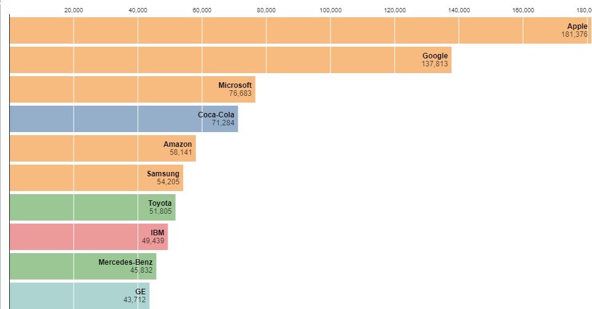

Prototypes
Goal
The purpose of this prototype is to visualize the number of alarms in different neighborhoods and zipcodes of San Francisco based on Priority.
Wrangling
For this prototype, the dataset was reduced to the last 5 years and records with null values from Neighborhoods as well as Priority were removed. The graphs are sorted graph by number of alarms.
Tableau Prototype
Created withPrototype 1
Prototype 2

Prototype 3
Theme Analysis
Prototype 1
This prototype tells you about the number of alarms in different areas of San Francisco. It shows that the highest number of calls are coming from Tenderloin and most of these calls are prioritized as Emergency. Many of these calls are for life threatening incidents. The least amount of calls received are from Presidio and Treasure Island.
Prototype 2
This prototype is an alternative for prototype 1. It shows Top 10 Neighborhoods in SF with respect to Number of alarms which are color encoded over priority. It shows that Tenderloin has highest Number of alarm of Priority 3 which is for Emergency.
Prototype 3
This prototype shows different alarms encoded over color and prioritized over size (where 3 is Emergency). It shows Station Area over different zip codes. It shows that 94110 has highest station area but least Priority. It relates with first prototype which shows different Neighborhoods of SF.
Planned Interactivity
Prototype 1 and Prototype 3
The final visualization will have an animation that shows details in tooltip and highlights the graph with respect to color class priority. It might also show maximum calls and call type. This is similar kind of interactivity planned to use.
Prototype 2
The final visualization will have following interactivity that can animate sorting the bars for increases in number of alarms from 2015 to 2020 for different Neighborhoods of SF.
